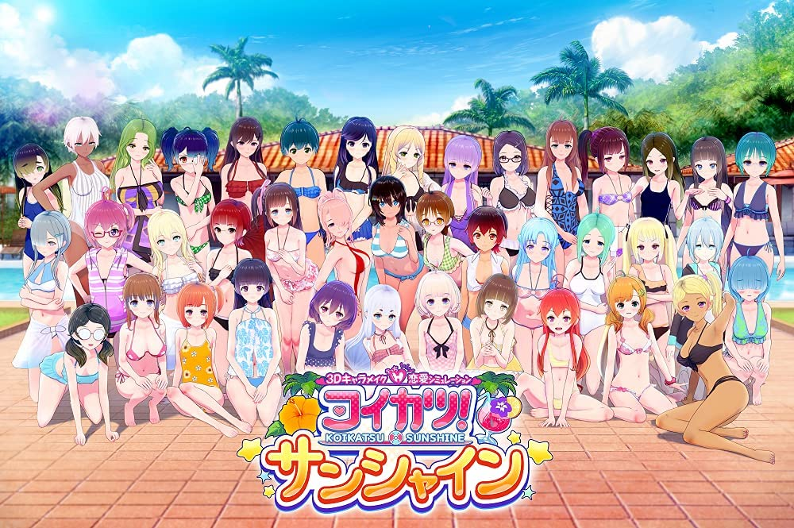
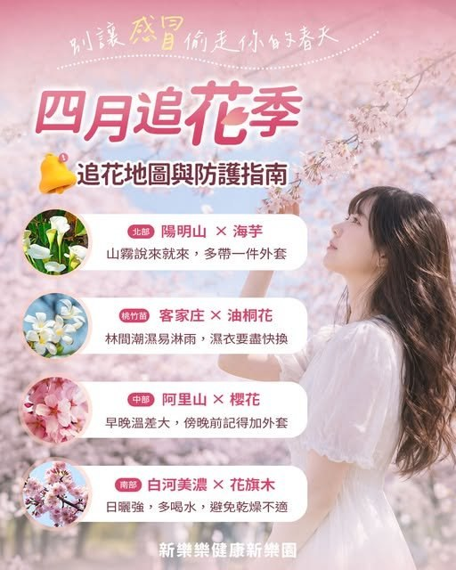
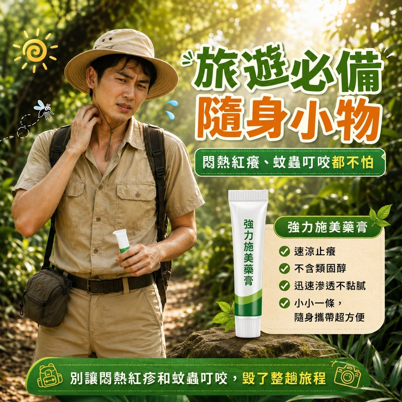
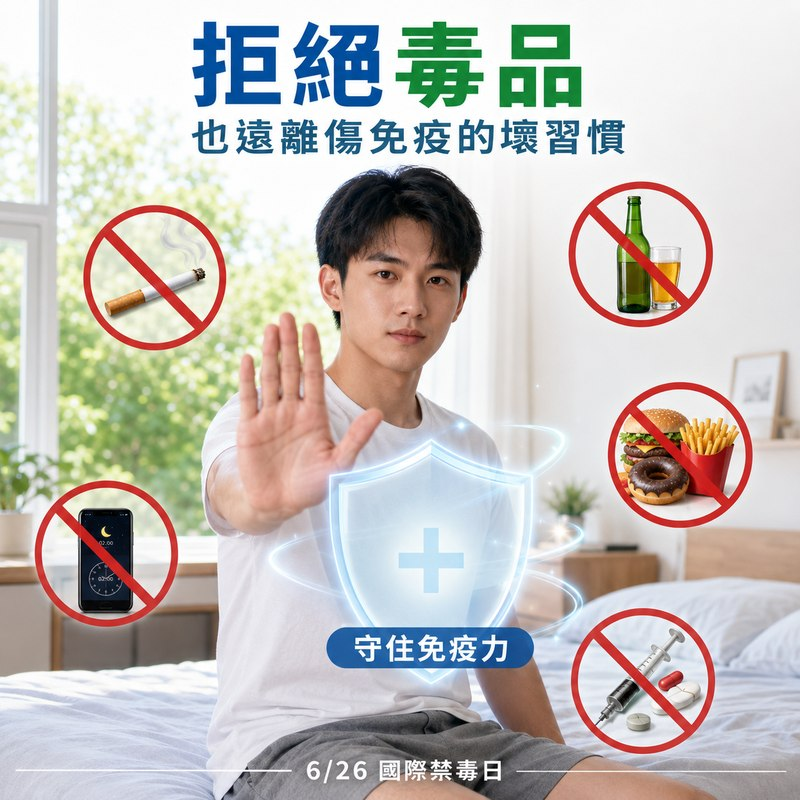
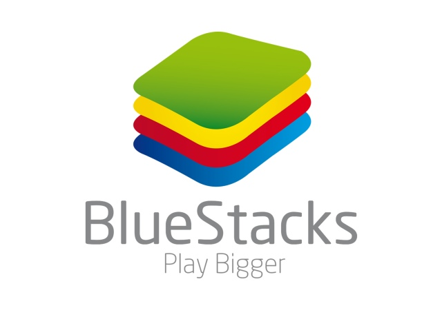

重用原生活動
從既有 NPC 活動與控制器出發，定位動作、道具與音訊的依賴，逐步驗證指定活動能否在主遊戲中使用。
04 / CREATIVE & TECHNICAL EXPLORATIONS
把想做的畫面與體驗，
一步步做出來。
從 AI 視覺到遊戲修改，記錄需求如何變成實作，以及過程中的測試、調整與取捨。
看看最近的遊戲互動實驗01 / GAME MODDING
概念驗證 POC · AI 協作開發讓看得到的場所，成為玩家能參與的互動。
從泳池、休息椅與角色活動點出發，探索如何在主遊戲中重用原生活動，並在互動結束後交還操作權。

這個修改，想完成什麼？
依玩家所在場景、距離與活動點占用情況，確認可使用的活動，再由玩家按鍵啟動。
互動入口：場景、位置與可用性提出場景需求、安排優先順序、制定驗收條件，並執行後期遊戲測試與迭代回饋。
Codex 協助原生機制研究、程式實作、編譯部署及文件整理；我依實際體驗確認方向與結果。
部分環境活動、雙角色互動與指定室內探索已有歷史執行或還原紀錄；完整回歸測試仍待補齊。
從既有 NPC 活動與控制器出發，定位動作、道具與音訊的依賴，逐步驗證指定活動能否在主遊戲中使用。
相機模式切換存在非同步更新。依歷史失敗紀錄調整還原順序，指定泳池測試已有相機還原前後的對照。
程式存在、執行事件與完整體驗是不同層次的證據。下一步補齊重複進出、切圖、角色替換及插件卸載的測試。
證據範圍依 2026.09.15 專案稽核整理。既有驗證限定於指定動作及場景；狀態還原仍有待修正項目，效能改善尚未量測。
C# ／ BepInEx ／ Unity 既有機制研究 ／ 狀態管理
02 / AI VISUAL STUDIES
作品展示從產品情境、季節活動與社群議題出發，探索人物、場景和產品之間的關係，讓內容方向有可以討論的畫面。
從分享零食的時刻，建立產品的使用情境。
 查看大圖 ↗
查看大圖 ↗把產品放入人物與生活場景之中。

查看大圖 ↗以季節主題串起旅遊資訊與防護內容。

查看大圖 ↗把商品功能放進具體的使用時刻。

查看大圖 ↗嘗試將宣導訊息整理成可閱讀的畫面。
03 / SPARK AR
過往濾鏡作品從人像文字、漫畫情緒符號到觸控手勢，透過保留下來的 Demo 與原始專案，看看效果如何組成。
進入 Spark AR 作品頁 · 看 Demo 與製作流程 ↗04 / OPERATION AUTOMATION
個人自動化實作
以 BlueStacks 製作練等與任務腳本，將重複輸入、等待與循環整理成可以重播的操作流程。
看作品與流程 ↗05 / WORK IN PROGRESS
AI 影像工作流


{kind=link}
{kind=link}
{kind=link}
{kind=link}